pspectro: Process Irradiance Data
This function processes absolute radiometric data (irradiance) with dimension 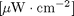 and calculates:
- The illuminance (lux) with dimension
![$[\mathrm{lm}\cdot\mathrm{m}^{-2}]$](pspectro_eq12683.png) .
. - The tristimulus values X,Y, and Z (CIE 1931 standard 2deg observer).
- The correlated color temperature 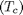 in kelvin.
- The color rendering indicies 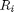 and the general color rendering index 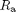 of the test source.
contact: Matt Aldrich, http://media.mit.edu/resenv/lighting/
Contents
function [XYZ2deg,ispd,lux,xyz2deg,cct,duv,Ra,R] = pspectro(mspd,~)
Usage
input
- The input vector mspd is of dimension (m,2) where the first column contains the x-axis (nanometers) and the second column contains the irradiance data to be processed.
output
- output: [XYZ2deg,ispd,lux,xyz2deg,cct,duv,Ra,R]
- XYZ2deg: Tristimulus vector of dimension [1,3] of the form [X Y Z].
- ispd: 1nm interpolated version of the input of form [nm,data].
- lux: the irradiance data weighted by the photopic efficiency function.
- xyz2deg: the x, y, and z projection onto CIE 1931 chromaticity space of form [x y z].
- cct: the correlated color temperature of the input source.
- duv: the distance from the blackbody curve for the color temperature.
- Ra: the CRI of the source of size [15,1].
- R: the individual scores of the index.
A example of mspd could be:
380.0000 0.0344 430.0000 0.8370 480.0000 0.5570 530.0000 2.7031 580.0000 1.5260 630.0000 3.8860 680.0000 0.3056 730.0000 0.0600 780.0000 0.0139
Function Description
pspectro calls multiple functions to calculate these parameters.
The value of range should not be changed, it specifies the range over which the data is integrated (visible range). The value unitconversion can be modified to accomodate a different a different scaling of mspd.
range = 380:1:780;
unitconversion = (1e-6/.0001); %convert [uW / cm ^ 2] -> [W / m ^ 2]
ispd
The function interpolatespd linearly interpolates the input. It is then available as an output.
ispd = interpolatespd(mspd,range);
getlux
The function getlux integrates the irradiance with the luminous efficiency function 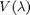 to calculate illuminance. The used here is the CIE 2-deg photopic luminosity curve (1924) available at http://cvision.ucsd.edu/. The relative spectral power of the color matching variable 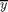 can also be used to calculate the total lux (see function getristimulus2deg).
The lux calculation uses the irradiance 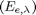 and performs a scalar multiplication with such that:
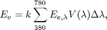
where 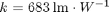.
The constant k represents the peak photopic sensitivity of the eye. The luminosity function is graphed below.
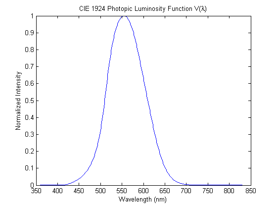
lux = getlux(interpolatespd([mspd(:,1) mspd(:,2).*unitconversion],range),range);
getristimulus2deg
The function gettristimulus2deg integrates the irradiance with the color matching functions of the CIE 1931 standard 2 degree observer and weights them such that the output Y of XYZ2deg is in the lux. These color matching functions can be obtained freely from the CIE website: http://www.cie.co.at/. Alternatively, consult this webpage for additional observers and updated data http://cvision.ucsd.edu/.
The tristimulus values are calculated using the measured irradiance according to the following equations:
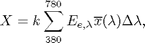
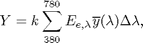
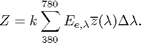
where . Alternatively, the constant could be specified such that the values were normalized to Y. In this case,
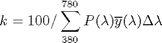
To edit the file, directly open and modify the gettristimulus2deg function.
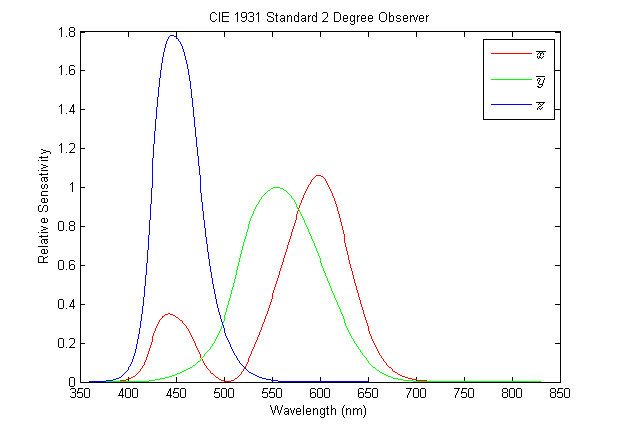
XYZ2deg = gettristimulus2deg(interpolatespd([mspd(:,1) mspd(:,2).*unitconversion],range),range);
getxyz
The function getxyz projects the [X,Y,Z] trimstimlus values onto two-dimensional chromaticity space (CIE 1931).
These coordinates are calculated as:
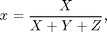
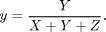
xyz2deg = getxyz(XYZ2deg);
xytouv
The function xytouv converts the (x,y) coordinate in (u,v) in the CIE 1960 Uniform Color Space.
These coordinates are calculated as:
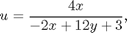
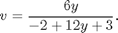
uv2deg = xytouv(xyz2deg);
getuvbbCCT
The function getuvbbCCT uses a table of (u,v) that correspond to a correlated color temperature using a resolution of 1 kelvin. The table was generated using a Plankian Radiator and projecting the resulting data onto CIE 1964 space (e.g, the blackbody curve was generated for all possible CCT at 1 kelvin resolution).
[cct duv] = getuvbbCCT(uv2deg(end,[1 2]));
getbbradiator
To calculate the CRI of the source, an ideal test source must be created. If the CCT of the source is below 5000 K, then getbbradiator is called and an ideal blackbody radiator is used as a reference.
To generate the reference spectrum, Planck's law is applied. The following equation is used to calculate the spectrum:
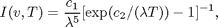
where 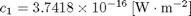 and 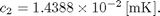 The desired color temperature 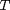 and the range 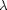 are set according to the correlated color temperature 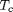 and range (typically 380nm - 780nm).
The reference source is normalized to 560 nm in the final step. An example of the function's output is given below for a blackbody radiator with 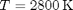.
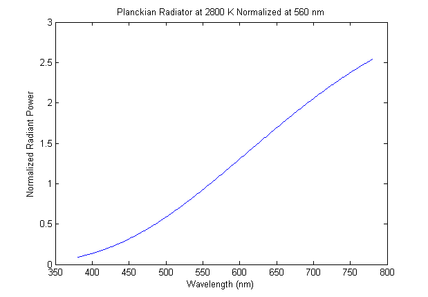
getdilluminantspd
If the test source has a CCT greater than 5000 K then a daylight simulator is used as a reference (function getdilluminantspd).
The spectral output of daylight can be obtained by the following equation
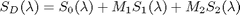
The eigenvectors 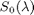,  , and 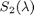 can be obtained freely at the CIE website http://www.cie.co.at/.
, and 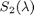 can be obtained freely at the CIE website http://www.cie.co.at/.
Obtaining 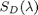 requires two steps. In the first step 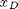 and are calculated. In the second step, and are used to calculate 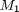 and 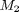. First, calculate and
When 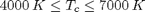
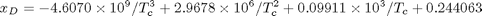
When 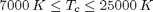
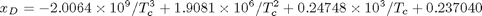
The other coordinate, is expressed by
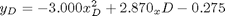
In the second step, calculate and such that:
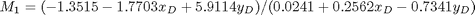
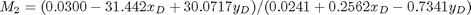
Using and , we can apply the following equation using , and, .
An example for normalized at 560nm is given below:
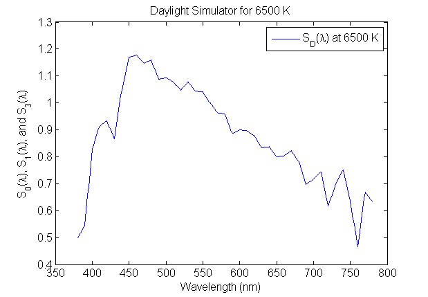
if cct <= 5000 nrefspd = getrelativespd(getbbradiator(cct,range),range,560); elseif cct > 5000 nrefspd = getrelativespd(getdilluminantspd(cct,range),range,560); end
getcri1995
The function getcri1995 computes where i is the index of the 15 samples used to compute the average 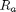 of the test source. The reflectance of the fifteen color samples is graphed below:
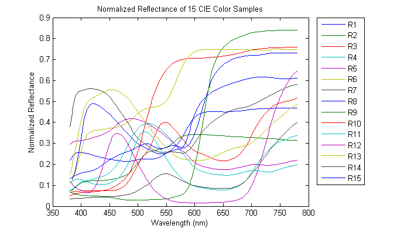
The calculation begins by first finding the normalized tristimulus values of the reflecting color samples designated by subscript i for 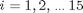 under the reference spectra  and test spectra 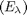. Thus, the tristimulus values of the reference source are:
and test spectra 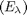. Thus, the tristimulus values of the reference source are:
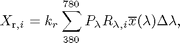
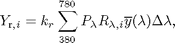
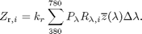
The tristimulus values for the test source are:
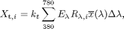
where is the relative power for the reference source, is the measured irradiance of the test source, is the tabulated reflectance of the current color sample, and , , and are the color matching functions of a the standard observer. For both the reference and test spectra (the function inputs), k is calculated for a perfect diffuse reflector (e.g., the term is one).
For both sources, k is found according to the following equations:
Where the subscripts and denote the reference and test source respectively.
In the second step, the previously calculated tristiumlus values of the fifteen color samples illuminanted under both the reference and test sources are mapped to CIE 1960 uv space. (see function getxyz and xytouv.) Once these equations are applied we obtain and , the uv coordinates of the reference source and test source in CIE 1964 UCS, respectively.
Next, the sample is chromatically adapted according to the Von Kries equations.
Here the reference source uv coordinates, the test source uv coordinates, and the uv coordinates of the color samples illuminated by the test source are converted to coefficicents c and d according to
and
We designate and to refer to the cd calculation for the reference source. Similarly, and refer to the test source. Finally, we reserve and to designate the converted uv coordinates of the test samples as illuminated by the test source. The subscript refers to the 15 samples calculated.
To indicate that a uv coordinate has been chromatically adapted we indicate it using a prime (i.e., and ). To take into account the adaptive color shift we apply the following equations:

To clarify the terms and refer to the coordinate calculated earlier.
Once the samples and test source have been adapted, the color difference between the samples is calculated according to CIE 1964 UVW space (CIEUVW) such that:
for
Again, for reference, the chromatically adapted samples illuminated using the test source are designated and . The terms and are the uv coordinates of the samples illuminated under the reference source.
The color difference is then calculated according to
The color rendering indices R_{i} for each of the color samples are obtained using
and the general color rendering index is given as the average of the first eight samples:
[Ra R] = getcri1995(ispd,nrefspd,range);
Sample Usage
A demo of this function can be performed by loading demo.mat and typing
>> [XYZ2deg,ispd,lux,xyz2deg,cct,duv,Ra,R] = pspectro(result)
Suppose a source is measured with the following irradiance:
and the vector result contains the measured data of form [nm,irradiance]. We call
>> [XYZ2deg,ispd,lux,xyz2deg,cct,duv,Ra,R] = pspectro(result)
XYZ2deg =
1.0e+003 *
1.4886 1.5000 1.1371
ispd = [omitted here]
lux =
1.5000e+003
xyz2deg =
0.3608 0.3636 0.2756
cct =
4500
duv =
1.7554e-016
Ra =
64.4896
R =
58.6969 85.1930 86.3655 45.1539 58.3774 74.2449 73.4934 34.3917 -50.1813 55.8588 24.7698 68.5544 64.8323 91.0630 56.3256
About
Author: Matt Aldrich
www: http://media.mit.edu/resenv/lighting
References
Wyszecki, G. & Stiles, W. S. Color Science : Concepts and Methods, Quantitative Data and Formulae. Wiley New York, 1982
Ohta, N. & Robertson, A. Colorimetry: fundamentals and applications. Wiley New York, 2005